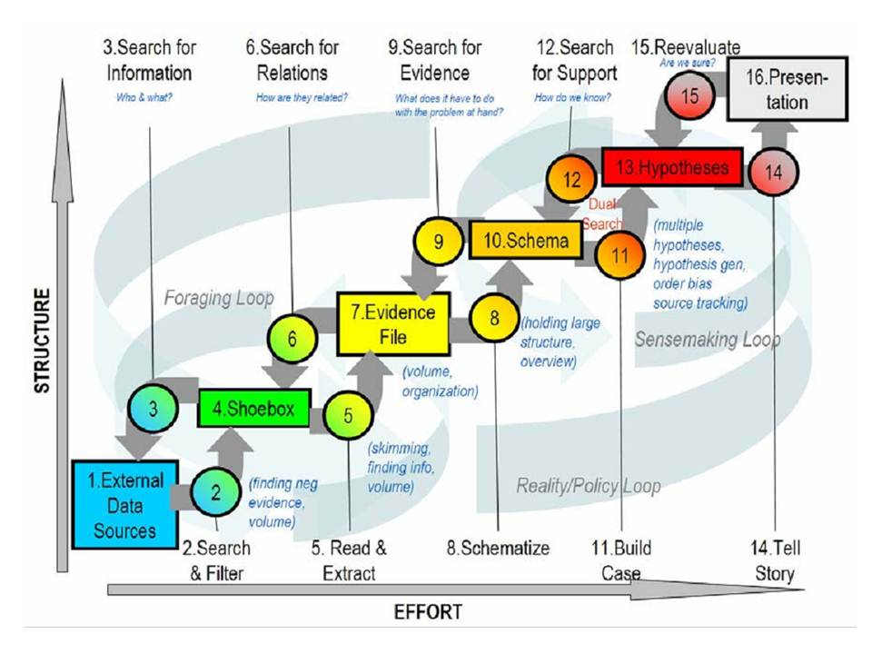

|
VTDP: Sensemaking
Sensemaking is a term applied to the overall process of analysis only parts of which typically involve visualization. Sensemaking provides a process framework in which many of the analytic tasks reside. The process of sensemaking is characterized by Pirolli and Card [1] as a set of nested loops as illustrated below.

The first loop which puts data in a “shoebox” is sometimes called data wrangling or data munging or data marshalling. (see VTDP Data Assessment).
This exists in larger scale foraging loop involving ”processes aimed at seeking information, searching and filtering it, and reading and extracting information” [1].
The second big loop is sensemaking itself and this has the goal of developing in the mind of the analyst a mental model that accounts for the evidence and applies it to some analytic problem. Most of the VTDPs describe methods that apply to the second loop. However, the major insights leading to an analytic breakthrough are as likely to occur when driving to work or even during sleep (this is not fanciful, many studies show that the brain reorganizes information during sleep). The VTDPs presented here, for the most part, enable the analyst to efficiently find out what is important in the data relative to some specific analytic task, supporting of efficient pattern search, and small scale hypothesis testing. Rarely is a major insight likely to occur during detailed analysis, but detailed analysis is usually a prerequisite for major insights to occur.
The final stage of the process involves presenting the results of analysis to others. At this stage insights are presented, together with the data patterns that support the insights. The VTDP Presentation: Linking Images and Words describes when images and words resepectively should be used to make an effective presentation.
References
- Pirolli, P., & Card, S. (2005, May). The sensemaking process and leverage points for analyst technology as identified through cognitive task analysis. In Proceedings of International Conference on Intelligence Analysis (Vol. 5).
|